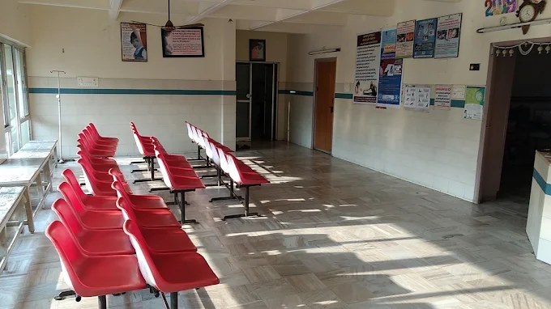
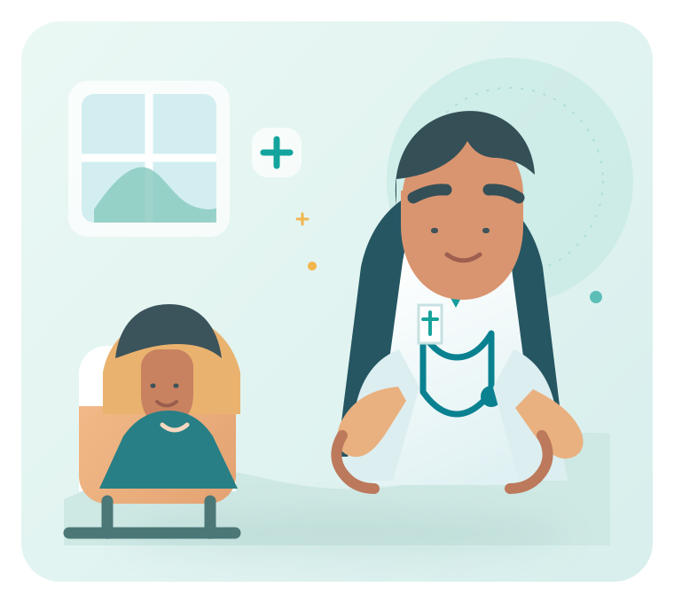
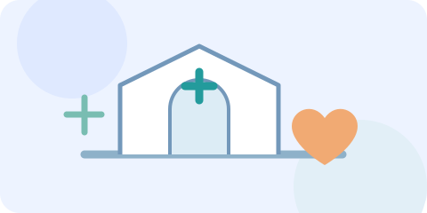
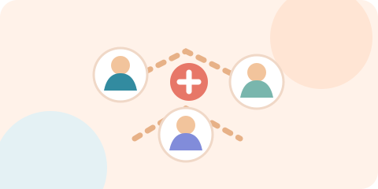
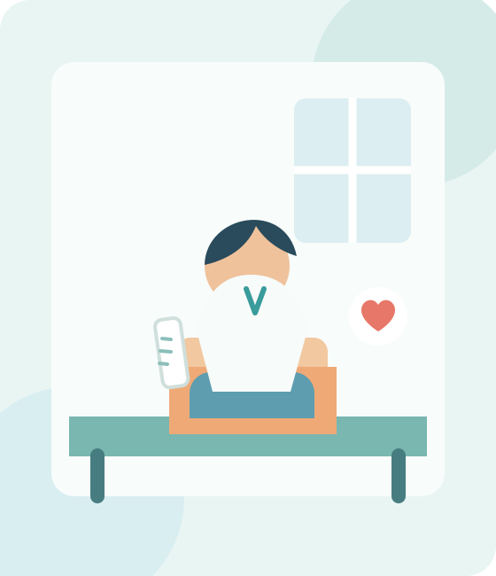
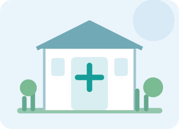
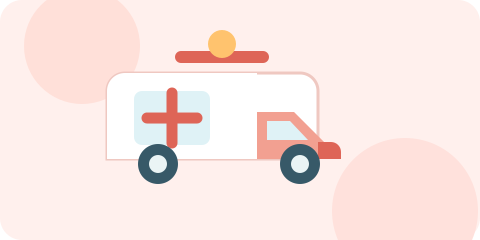
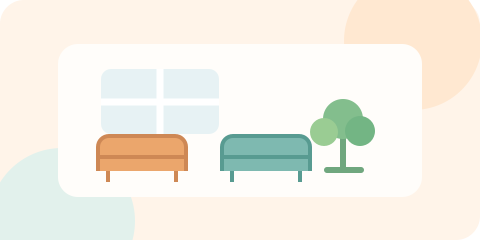
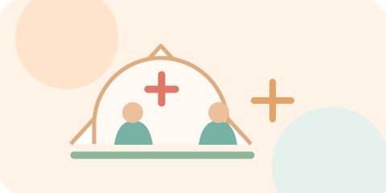

K J Hospital · Chilakaluripet
Care that feels closer to home.
Thoughtful, patient-centred support for you and your family — with a caring team and urgent help when you need it.
Compassion firstCare with respect
Close to homeHere in Chilakaluripet
Here when neededUrgent support line

Care, with a human touchHere for your family
Our Approach
Healthcare that puts patients first
At Kandimalla Jayamma Hospital, we understand that visiting a hospital can be stressful for patients and their families. Our approach is centred around respectful care, clear communication and appropriate medical attention based on each patient's individual needs.
Why choose us
Compassion, safety and continuity of care
Patient-Centred Care
Every patient deserves dignity, respect and compassionate treatment.

Accessible Healthcare
Located in Chilakaluripet for easier access to local families.
Focus on Safety
We aim to maintain a safe, supportive environment for everyone.

Coordinated Care
Medical and support teams work together through each treatment journey.
Convenient Access
Our location supports fast, practical care for nearby communities.
Continuity of Care
We focus on follow-up and long-term health management for recovery.
About us
Healthcare with compassion and commitment
Kandimalla Jayamma Hospital is a healthcare facility located in Chilakaluripet, Andhra Pradesh, serving patients from Chilakaluripet and neighbouring communities.
Our objective is to provide accessible healthcare in a professional and supportive environment. We recognise that every patient has different healthcare requirements, and our approach is focused on understanding those needs and providing appropriate medical attention.
Our Mission
- Patient safety
- Compassionate care
- Professional medical support
- Respect and dignity
- Timely healthcare
- Clear communication


Our services
Supporting patients through every stage of care
Medical Consultation
Professional evaluation, diagnosis and treatment planning for health concerns.

Emergency & Urgent Care
Immediate attention for critical or urgent cases. Please confirm service details directly.
Diagnostic Support
Investigations that help clinicians assess conditions and plan treatment.
In-Patient Care
Hospitalisation, monitoring, treatment and recovery under professional supervision.
Preventive Healthcare
Awareness, early identification and guidance for healthier living.
Follow-Up Care
Continued guidance to monitor recovery and ongoing health management.
Doctors & Departments
Meet our healthcare team
Doctor availability and specialist consultation timings should be confirmed directly with the hospital administration.

General
Dr. Ananya Reddy
General Medicine
Consultation and long-term treatment planning for everyday medical concerns.
Book Consult
Urgent
Dr. Ravi Kumar
Emergency Care
Rapid assessment and urgent support when patients need immediate attention.
Call Hospital
Lab
Dr. S. Neha
Diagnostic Services
Clinical evaluation and investigations to guide accurate and timely care.
Check Availability
Care
Dr. K. N. Rao
In-Patient Care
Compassionate supervision and recovery support for admitted patients.
Speak With TeamPatient information
Preparing for a smoother hospital visit
Before Your Visit
- Government-issued identification
- Previous medical reports
- Prescription and lab reports
- Insurance and referral documents
During Consultation
- Current symptoms
- Previous medical conditions
- Current medications and allergies
- Relevant treatment history
Follow-Up Visits
- Previous prescriptions
- Reports and discharge documents
- Any recent imaging or test results
Insurance & Billing
- Accepted insurers
- Cashless treatment availability
- TPA procedures and pre-authorisation
- Billing and payment methods
Facilities
Comfortable support for patients and families
01
Patient Care Areas
02
In-Patient Facilities
03
Nursing Support
04
Diagnostic Support

05
Patient Waiting Areas
06
Pharmacy Support
Health & Wellness
Promoting awareness and healthier communities
Health Tips
Guidance for daily well-being, nutrition and healthy routines.
Awareness Programs
Educational initiatives that support early detection and health literacy.

Medical Camps
Community-focused health events designed for accessibility and screening.
Gallery
Moments from our healthcare environment
Care Environment
Consultation
Supportive Team
Patient Comfort
Emergency Care
Diagnostic Support
Find Us
Location
K J Hospital Google map location
24 Hours / 7 Days
Contact us
Visit K J Hospital
K J Hospital
4-176, 5th Lane, Pandaripuram,
Venugonda, Chilakaluripet,
Andhra Pradesh – 522616, India.
For specific department availability, doctor consultation timings and emergency service details, please contact the hospital directly.